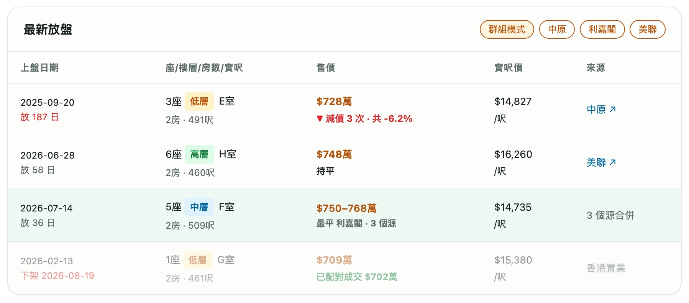
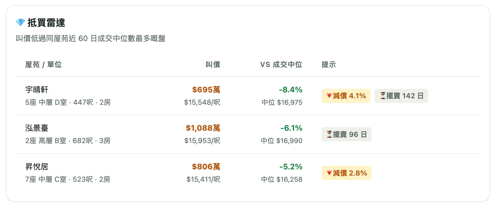
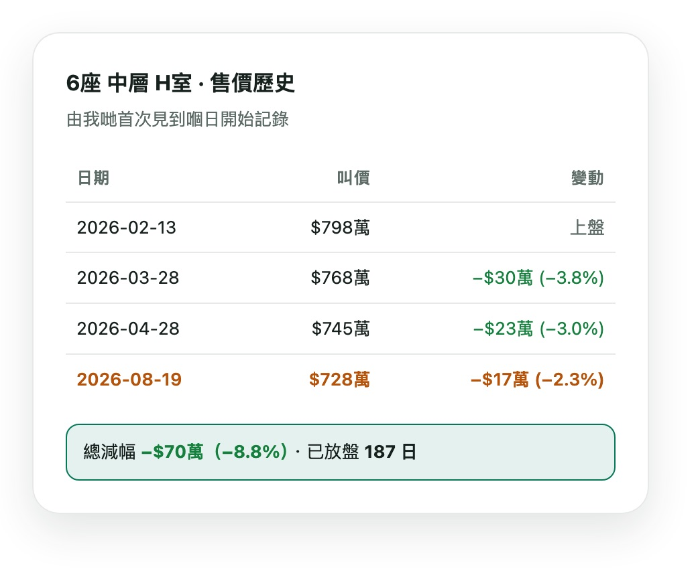
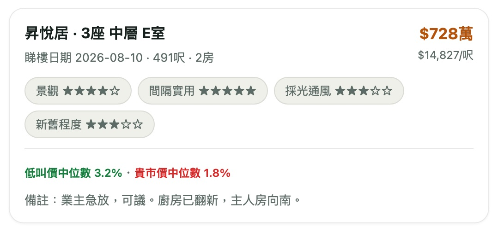

載入中…

每個盤跟住真實放盤日數、減過幾多次價。同一單位喺幾個網重複放會自動合併做一行，仲會自動配對返成交價。

自動攞同屋苑近期成交中位數做基準，篩出叫價低最多嗰批，仲會標埋「擺賣幾耐」「啱啱減價」。

由我哋首次見到嗰日開始記，每次減價幾多、幾時減，一條時間線列曬。

逐項自訂評分，影相、寫備註。仲會同時話你知呢個單位相對叫價同成交中位數係貴定平。
四大地產網每日自動追蹤，記低每個盤嘅歷史——幾時上、減幾多、幾時落。
刷新扮新盤？我哋用首次見到嗰日計，呃唔到。
兩個月減三次價，每次都記低俾你睇晒。
自動對比成交中位數，貴定平即刻知。
| HouseRadar | 地產代理網站 | |
|---|---|---|
| 立場 | ✓ 買家自己嘅工具 | 促成交易 |
| 放盤日數 | ✓ 首見日起計，刷新冇用 | 可刷新扮新盤 |
| 改價歷史 | ✓ 每次都記低 | 得返而家個價 |
| 盤消失咗 | ✓ 標記＋自動配對成交 | 冇下文 |
| 跨網比較 | ✓ 四網自動合併 | 逐個網自己睇 |
| 貴定平 | ✓ 自動對比成交中位數 | 自己揭成交 |
| 你嘅電話 | ✓ 唔會攞，亦冇經紀 | 留低等經紀跟進 |